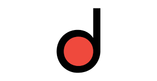

Morocco Textile SAÉtude de cas · Third Party
1. Contexte de l’entreprise
Morocco Textile SA est une entreprise spécialisée dans la distribution de produits textiles au Maroc.
Afin de réduire les coûts de stockage et améliorer la réactivité, l’entreprise adopte un modèle de vente en third party :
👉 Les produits sont livrés directement du fournisseur au client, sans passer par le stock de l’entreprise.
2. Problématique
- Absence d’un flux third party structuré dans SAP
- Manque de visibilité sur la marge
- Processus de facturation non automatisé
- Envoi manuel des factures aux clients
- Pas de gestion spécifique du split facture
3. Objectifs du projet
- Implémentation d’un flux vente directe (third party)
- Automatisation de la génération :
- Demande d’achat
- Commande d’achat
- Mise en place d’un schéma de prix avec marge et schéma partenaire
- Automatisation : impression de la facture + envoi par email via OPD
- Gestion du split de facture avec le critère « Shipping Point »
- Assurer une intégration FI
SD
MM
FI
OPD
Split facture
4. Acteurs
Client
Fournisseur
Organisation de vente (SD)
Organisation d’achats (MM)
Comptabilité (FI)
Équipe technique
5. Processus métier
Le flux métier du processus Third Party est illustré ci-dessous :

6. Partie Fonctionnelle
1. Création des types de documents
- Définition d’un type de commande Third Party
- Mise en place d’un schéma de document incomplet
👉 Contrôle des champs obligatoires (client, matériau, quantité...)
2. Schéma partenaire
- Sold-to (SP)
- Ship-to (SH)
- Bill-to (BP)
- Payer (PY)
👉 Gestion complète du client dans le flux SD
3. Schéma de prix
- Prix de base
- Remise
- Frais d’approche
- Condition de marge
4. Gestion des règles de copie
- Commande → Facture
- Définition des données à transférer
5. Gestion de l’impression (OPD)
- Détermination des messages de sortie
- Configuration impression facture
- Envoi email
7. Template E-mail
Définition du corps du mail
📧 Modèle d’email personnalisé.
8. Détermination des comptes "FI"
9. Volet technique
1. Développement du formulaire facture
Technologie : Adobe Form / Smartform
2. Template E-mail
- Implémentation du template
- Liaison avec formulaire PDF
- Liaison avec paramétrage OPD
3. Développement spécifique – Split facture
- Création d’une routine
- Ajout du critère : Point d’expédition
10. Synchronisation Fonctionnel ↔ Technique
1. Formulaire Facture
| Fonctionnel | Technique |
|---|---|
| Définir contenu (champs, structure) | Développer Adobe Form / Smartform |
| Fournir maquette | Implémentation layout |
| Valider affichage | Tests techniques |
2. Template E-mail
3. Split facture
Morocco Textile SA — Projet Third Party